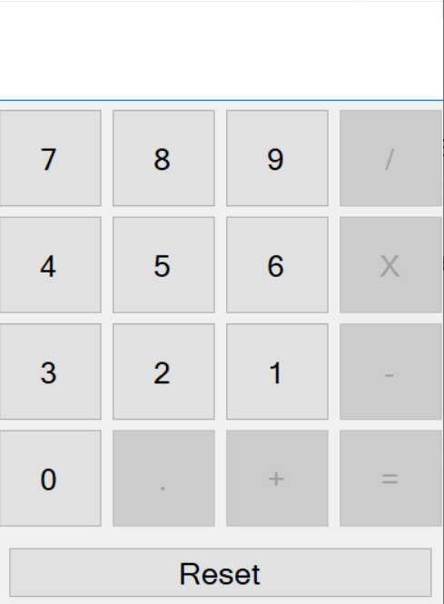

Notebook
My newest project which I also did in my spare time. This application is a bit more advanced because it allows the user to create, save, edit and delete notes, each of these actions takes place between the application and the database. Project made using C #, .Net, SQL, MSSQL, Entity Framework and Windows Forms.
Download documentation